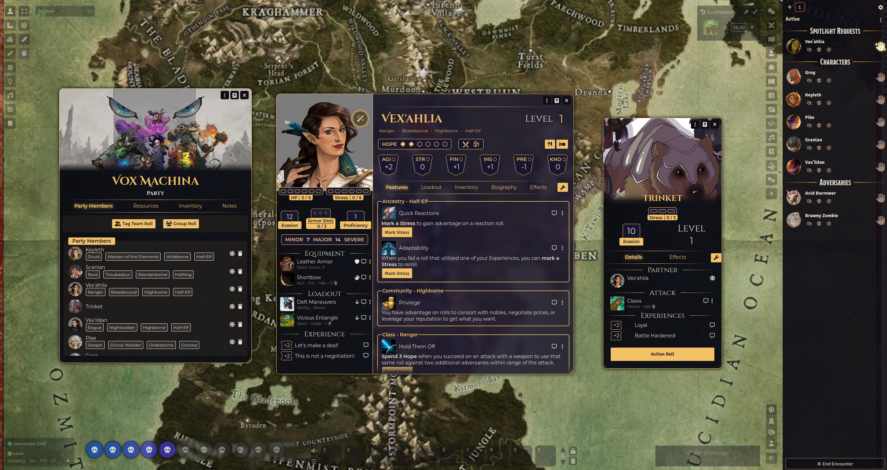
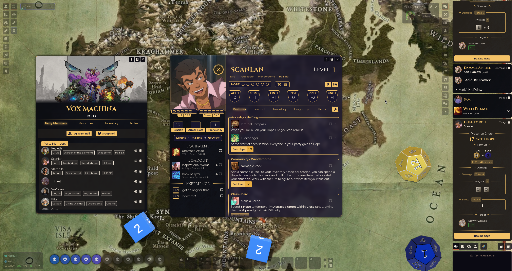

Screenshot Gallery
Main Screenshots


Settings Screenshots
{% assign settings_images = site.static_files | where_exp:"file","file.path contains
'/assets/screenshots/settings/'" %}
{% for file in settings_images %}
{% assign filename = file.path | split: '/' | last %}
{% assign title = filename | replace: '.png','' | replace: '.jpg','' | replace: '.jpeg','' | replace: '.gif','' %}
 {% endfor %}
{% endfor %}